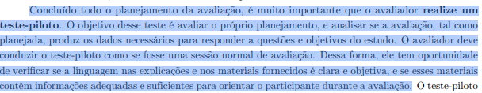

Histórico de Versão¶
| Data | Versão | Descrição | Autor(es) | Revisor(es) | Declaração do uso de IA |
|---|---|---|---|---|---|
| 11/10/2026 | 1.0 |
Elaboração do Planejamento e Protocolo do Teste Piloto da Etapa 4 (definição, roteiro, ficha de calibração e cronograma). | Igor Dantas Araújo | Gabriel Cardone | Google Gemini - utilizado para formatação MarkDown da página |
| 20/10/2026 | 1.1 |
Revisão do Planejamento e Protocolo do Teste Piloto da Etapa 4 (definição, roteiro, ficha de calibração e cronograma). | Rodrigo Barbosa | Arthur Mariani | — |
| 25/10/2026 | 1.2 |
Inclusão do link e incorporação da gravação em vídeo da simulação do Teste Piloto. | Rodrigo Barbosa | Carlos Costa | — |
Planejamento e Protocolo do Teste Piloto¶
Neste documento, apresenta-se o Planejamento e Protocolo do Teste Piloto para as avaliações formativas da Etapa 4 do projeto de Interação Humano-Computador (IHC) aplicado ao portal da SEMOB-DF.
O teste piloto consiste em um ensaio preparatório essencial para calibrar os instrumentos de coleta, verificar o funcionamento das ferramentas de gravação, validar o tempo estimado das sessões e aperfeiçoar a postura do avaliador antes do início formal das avaliações com os usuários reais na Etapa 5.
O procedimento e os materiais do piloto estão ancorados nos artefatos produzidos pelo grupo: o Storyboard 01 — Alerta inteligente de saída, vinculado à tarefa TAR-01 e ao Cenário 2, cuja persona de referência é João Pedro Carvalho.
1. Introdução¶
Este documento integra a Etapa 4 do projeto de avaliação e reprojeto do portal da SEMOB-DF e descreve o planejamento e o protocolo do teste piloto que antecede as sessões de avaliação com usuários. O piloto é um ensaio interno, conduzido pela equipe, que simula uma sessão real para verificar se o roteiro, o tempo, a gravação e os equipamentos funcionam como o planejado, antes da coleta de dados da Etapa 5.
Como o teste piloto tem como foco ensaiar o procedimento de avaliação, um único storyboard e a análise de tarefas correspondente (modelos HTA e CTT da TAR-01) são suficientes para exercitar todo o roteiro.
⚠️ CONFORMIDADE COM O ITEM 12 DO CHECKLIST DA ETAPA 4
Os resultados obtidos no teste piloto servem exclusivamente para calibração do roteiro, do tempo e dos recursos tecnológicos. Eles não serão computados nem contabilizados nos resultados das avaliações finais do Storyboard nem da Análise de Tarefas. A declaração formal encontra-se na Seção 6.
2. Fundamentação Teórica: Conceito, Importância e Condução¶
2.1 Conceito do Teste Piloto em IHC¶
Segundo Barbosa et al. (2021), no trecho que pode ser visto na imagem 1, o teste-piloto faz parte da subetapa de Preparação da avaliação (Capítulo 11, Seção 11.7.2), que antecede a Coleta de Dados. Para os autores, concluído o planejamento da avaliação, é fundamental que o avaliador execute essa simulação prática:
"Concluído todo o planejamento da avaliação, é muito importante que o avaliador realize um teste-piloto. O objetivo desse teste é avaliar o próprio planejamento, e analisar se a avaliação, tal como planejada, produz os dados necessários para responder a questões e objetivos do estudo. O avaliador deve conduzir o teste-piloto como se fosse uma sessão normal de avaliação. Dessa forma, ele tem oportunidade de verificar se a linguagem nas explicações e nos materiais fornecidos é clara e objetiva, e se esses materiais contêm informações adequadas e suficientes para orientar o participante durante a avaliação."
— BARBOSA et al. (2021, Cap. 11, Seção 11.7.2, p. 260).
2.2 Finalidade e Importância para o Projeto¶
A partir dessa orientação teórica, a equipe definiu as seguintes finalidades operacionais para o piloto:
-
Validar a clareza do roteiro: Conferir se as instruções, a ordem das etapas e as perguntas do Framework DECIDE são claras e não induzem respostas.
-
Aferir o tempo da sessão: Verificar se a duração prevista é realista e não causa fadiga.
-
Testar a captura de mídia: Garantir que áudio, vídeo e compartilhamento de tela são salvos corretamente.
-
Testar equipamentos e plataformas: Validar o uso do Microsoft Teams e ferramentas de gravação de reserva.
-
Ensaiar o protocolo ético: Treinar a apresentação do Termo de Consentimento Livre e Esclarecido (TCLE) e o pedido de autorização de gravação.
-
Treinar a postura do avaliador: Garantir condução neutra, cordial e sem interferências indevidas.
3. Planejamento Operacional do Teste Piloto¶
3.1 Objetivos Específicos¶
- Executar de ponta a ponta uma sessão simulada, seguindo o roteiro do estudo.
- Identificar perguntas ambíguas, extensas ou mal ordenadas.
- Mensurar o tempo exato gasto em cada bloco da entrevista.
- Testar a estabilidade da gravação remota e do compartilhamento dos diagramas.
- Registrar os ajustes necessários na Ficha de Calibração e consolidar o roteiro final.
3.2 Materiais e Artefatos Utilizados¶
- Storyboard 01 (Alerta inteligente de saída): Apresentação sequencial quadro a quadro.
- Cenário 2 e Persona: Resumo do Cenário 2 e do perfil de João Pedro Carvalho.
- Diagramas da Análise de Tarefas: Modelos HTA e CTT da TAR-01.
- Termo de Consentimento (TCLE): Versão oficial adaptada para as avaliações (TCLE Pesquisa Transporte).
- Roteiro e Ficha de Calibração: Formulários de condução e registro de ajustes.
3.3 Papéis e Atribuições¶
Para garantir a fidelidade do ensaio, os membros do grupo assumem papéis definidos na sessão piloto:
Tabela 1 — Matriz de Papéis na Execução do Teste Piloto
| Papel | Responsável | Atribuições |
|---|---|---|
| Avaliador (Condução) | Gabriel Cardone | Conduz a sessão, lê o roteiro, apresenta o TCLE, compartilha o material e aplica as perguntas. |
| Participante Simulado | Carlos Henrique | Simula o perfil do usuário primário e responde de forma verossímil. |
| Observador / Anotador | Lucas, Tomás, Arthur, Rodrigo | Registra dúvidas, hesitações, tempos por bloco e falhas de clareza sem interromper a sessão. |
| Responsável pela Gravação | Igor Dantas | Controla o início/fim da gravação no Teams e monitora o software de reserva. |
Fonte: Igor Dantas Araújo (2026).
3.4 Agendamento, Plataforma e Infraestrutura¶
Tabela 2 — Parâmetros Logísticos do Agendamento Interno
| Parâmetro | Definição Operacional |
|---|---|
| Data e Horário: | 17/10/2026 (sábado) às 15:00. |
| Plataforma Principal: | Microsoft Teams (reunião remota com gravação ativada). |
| Gravação de Reserva: | Software 123APPS / OBS Studio (captura local de tela e áudio). |
| Condução e Apoio: | Gabriel, Carlos, Igor, Tomás, Rodrigo, Lucas e Arthur. |
| Custos Estimados: | R\$ 0,00 (uso de infraestrutura corporativa/acadêmica já disponível). |
Fonte: Igor Dantas Araújo (2026).
4. Protocolo e Roteiro Passo a Passo do Teste Piloto¶
Tabela 3 — Roteiro Sequencial da Sessão Piloto
| Passo | Atividade | Responsável | Tempo Est. | O que Verificar (Calibração) |
|---|---|---|---|---|
| 0 | Preparação: Abrir reunião no Teams, testar áudio/vídeo, carregar Storyboard, diagramas, TCLE e roteiro. | Gabriel e Igor | 15 min antes | Todos os arquivos abrem corretamente? O compartilhamento funciona? |
| 1 | Boas-vindas: Apresentar-se, explicar o objetivo e reforçar que a avaliação é sobre o artefato, não a pessoa. | Gabriel | 3 min | O texto de abertura é claro e acolhedor? |
| 2 | TCLE e Consentimento: Ler o termo, confirmar o aceite verbal para gravação e iniciar a gravação. | Gabriel e Igor | 4 min | A leitura do TCLE é fluida? O consentimento ficou registrado na gravação? |
| 3 | Perfil do Participante: Perguntas breves de caracterização (idade, rotina de transporte, uso de apps). | Gabriel | 3 min | As perguntas são suficientes e não invasivas? |
| 4 | Contextualização: Apresentar a persona João Pedro Carvalho e o resumo do Cenário 2. | Gabriel | 3 min | O contexto do problema foi compreendido sem necessidade de explicações extras? |
| 5 | Exibição do Storyboard 01: Apresentar os quadros em sequência, permitindo a leitura individual. | Gabriel | 5 min | Os desenhos e textos estão legíveis na tela compartilhada? |
| 6 | Avaliação do Storyboard: Aplicar perguntas sobre clareza, verossimilhança, reações e engajamento. | Gabriel, Lucas, Tomás, Arthur, Rodrigo | 8 min | Alguma pergunta pareceu confusa ou induziu a resposta? |
| 7 | Validação da Análise de Tarefas: Exibir diagramas HTA/CTT e perguntar sobre a coerência do fluxo. | Gabriel, Lucas, Tomás, Arthur, Rodrigo | 8 min | Os diagramas de tarefas são compreensíveis para o participante? |
| 8 | Encerramento: Abrir espaço para comentários finais, agradecer e encerrar a gravação. | Gabriel e Igor | 2 min | A gravação foi salva corretamente? Qual foi o tempo total da sessão? |
| 9 | Debriefing Interno: Preencher a Ficha de Calibração com a equipe e listar ajustes do roteiro. | Gabriel, Igor, Lucas, Tomás, Arthur, Rodrigo, Carlos | 15 min pós | Quais pontos do roteiro precisam de reformulação? |
Fonte: Igor Dantas Araújo (2026). Tempo total estimado da sessão simulada: ~36 minutos.
4.1 Perguntas-Modelo de Avaliação do Storyboard 01¶
- Clareza Narrativa: "Com suas palavras, o que acontece nesta história?"
- Verossimilhança Contextual: "Essa situação de o ônibus se adiantar e perder a viagem parece com algo que você já viveu no DF?"
- Coerência de Reações: "A atitude do João Pedro de confiar na notificação e sair de casa imediatamente faz sentido para você?"
- Engajamento com a Solução: "Você ativaria um alerta inteligente como esse na sua rotina? O que mudaria nele?"
4.2 Perguntas-Modelo de Validação da Análise de Tarefas (TAR-01 - HTA/CTT)¶
- "A sequência de passos mostrada no diagrama corresponde à forma como você decide a hora de sair de casa?"
- "Falta algum passo importante no planejamento da sua caminhada até o ponto?"
- "Caso o sistema envie uma notificação de atraso crítico, a opção de rota alternativa atende à sua necessidade?"
4.3 Diretrizes e Conduta Ética do Avaliador¶
- Conduzir o piloto com o mesmo rigor de uma sessão real, sem pular etapas (Barbosa et al., 2021, p. 260).
- Manter postura neutra, sem emitir opiniões pessoais ou defender os artefatos.
- Registrar os tempos exatos por bloco e assinalar momentos em que o participante hesitou.
- Durante o debriefing (Passo 9), ouvir o feedback do participante simulado sobre a fluidez do procedimento.
5. Ficha de Calibração do Teste Piloto¶
Tabela 4 — Ficha de Avaliação e Calibração Pós-Piloto
| # | Item Verificado | Critério de Aprovação | Resultado (OK / Ajustar) | Ação Corretiva Realizada |
|---|---|---|---|---|
| 1 | Clareza do Roteiro | O avaliador conduz a sessão sem dúvidas sobre o que falar ou apresentar. | - | - |
| 2 | Duração Total | Sessão finalizada dentro da janela prevista (30–45 min). | - | - |
| 3 | Duração por Bloco | Nenhum bloco individual excede 50% do tempo estipulado. | - | - |
| 4 | Registro do TCLE | Leitura do termo e aceite registrado no início da gravação. | - | - |
| 5 | Compreensão das Perguntas | Participante responde diretamente, sem pedir reformulação. | - | - |
| 6 | Neutralidade das Perguntas | Perguntas não induzem respostas positivas ou negativas. | - | - |
| 7 | Legibilidade dos Artefatos | Storyboard e diagramas perfeitamente visíveis em tela. | - | - |
| 8 | Qualidade da Gravação | Áudio limpo, sem eco, e captura de vídeo/tela contínua. | - | - |
| 9 | Estabilidade da Conexão | Sessão conduzida sem quedas de sinal no Teams. | - | - |
| 10 | Qualidade das Anotações | O anotação permite identificar dúvidas e tempos de cada etapa. | - | - |
| 11 | Armazenamento Seguro | Arquivo de mídia salvo em repositório acessível à equipe. | - | - |
Fonte: Igor Dantas Araújo (2026).
5.1 Gravação da Execução do Teste Piloto¶
O registro audiovisual da simulação prática do teste piloto realizado pela equipe está disponível no YouTube pelo link abaixo:
- Vídeo do Teste Piloto: https://youtu.be/ksrdguID_Dc
Vídeo 1: Gravação da simulação do Teste Piloto (Storyboard 01 e Tarefa TAR-01).
6. Declaração de Conformidade com o Item 12 do Checklist¶
Declara-se formalmente que os dados, respostas, anotações e gravações obtidos durante a execução deste teste piloto serão utilizados exclusivamente para calibrar o roteiro, o tempo de entrevista, as ferramentas de gravação e a postura do avaliador. Esses dados NÃO serão computados, contabilizados nem agregados aos resultados das avaliações finais do Storyboard nem da Análise de Tarefas (Etapa 5), e não comporão as tabelas de problemas ou priorização dos relatórios finais.
Tabela 5 — Mapeamento de Conformidade com o Plano de Ensino
| Item Checklist | Requisito do Plano de Ensino | Localização no Documento |
|---|---|---|
| 11 | Conceito de teste piloto definido com citação + indicação de obra, com data e procedimento agendados. | Seções 2.1, 3.4 e 4; Indicação da obra na Seção 8. |
| 12 | Declaração explícita de não contabilização dos dados do piloto nos resultados finais. | Seção 1 (Introdução) e Seção 6. |
Fonte: Igor Dantas Araújo (2026), baseado no Plano de Ensino (SALES, 2026).
7. Cronograma e Gestão de Riscos¶
Tabela 6 — Cronograma de Execução do Teste Piloto
| Período | Atividade | Responsável |
|---|---|---|
| 10/10 a 17/10 | Elaboração do roteiro, TCLE, ficha de calibração e estrutura do piloto. | Igor Dantas |
| 17/10 | Execução interna do teste piloto no Teams e preenchimento da Ficha. | Gabriel, Igor, Lucas, Tomás, Arthur, Rodrigo, Carlos |
| 17/10 a 20/10 | Refinamento do roteiro final com base nos ajustes da calibração. | Gabriel, Igor, Lucas, Tomás, Arthur, Rodrigo, Carlos |
| 21/10 | Revisão por pares deste documento. | Gabriel Cardone |
| 24/10 | Fechamento da página e verificação final no MkDocs/GitHub Pages. | Gabriel, Igor, Lucas, Tomás, Arthur, Rodrigo, Carlos |
| 25/10 (23:59) | Entrega oficial da Etapa 5. | Gabriel, Igor, Lucas, Tomás, Arthur, Rodrigo, Carlos |
Fonte: Igor Dantas Araújo (2026).
Tabela 7 — Matriz de Riscos e Planos de Contingência
| Risco Mapeado | Impacto | Plano de Contingência / Ação Imediata |
|---|---|---|
| Instabilidade ou queda no Teams | Médio | Reativar a reunião ou migrar para o Google Meet; retomar do passo interrompido. |
| Corrupção na gravação principal | Alto | Utilizar o arquivo de gravação de reserva gerado pelo 123APPS / OBS. |
| Ausência do participante simulado | Baixo | Convocar imediatamente outro integrante do Grupo 05 para assumir o papel. |
| Excesso de tempo na sessão (>45 min) | Médio | Identificar blocos extensos no debriefing e enxugar/reordenar perguntas no roteiro final. |
Fonte: Igor Dantas Araújo (2026).
8. Imagem da Referência no Livro¶
Conforme as diretrizes da disciplina, a fundamentação conceitual sobre o teste piloto encontra-se localizada no livro-texto oficial:

Imagem 1 - Barbosa et al., 2021, Seção 11.7.2, p. 2609. Referências Bibliográficas¶
- BARBOSA, Simone Diniz Junqueira; SILVA, Bruno Santana da; SILVEIRA, Milene Selbach; GASPARINI, Isabela; DARIN, Ticianne; BARBOSA, Gabriel Diniz Junqueira. Interação Humano-Computador e Experiência do Usuário. Rio de Janeiro: Autopublicação, 2021. ISBN 978-65-00-19677-1. (Capítulo 11: Planejamento da Avaliação de IHC, Seção 11.7.2, p. 258–261).
- BRASIL. Conselho Nacional de Saúde. Resolução nº 510, de 07 de abril de 2016. Regulamenta as pesquisas em Ciências Humanas e Sociais. Brasília: Diário Oficial da União, 2016.
- PREECE, Jennifer; ROGERS, Yvonne; SHARP, Helen. Design de Interação: Além da interação homem-computador. São Paulo: Editora Érica, 2005.
- SALES, André Barros de. Plano de Ensino: Interação Humano Computador. Brasília: Universidade de Brasília, FCTE/UnB, 2026.
Autor: Igor Dantas Araújo
Revisor: Gabriel Cardone